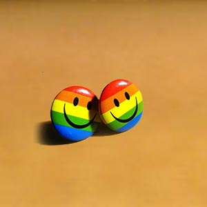

本测验共有187道题目， 都是有关个人的兴趣和态度等问题。每个人对这些问题是会有不同看法的，回答也是不同的，因而对问题如何回答，并没有“对”与“不对”之分，只是表明你对这些问题的态度。请你要尽量表达个人的意见，不要有顾虑。
该问卷由美国著名心理学教授卡特尔(R.B.Cattell)用因素分析法编制而成。施测该问卷可以得到16种主要的人格特质因素，分别是：乐群性、聪慧性、（情绪）稳定性、恃强性、兴奋性、永恒性、敢为性、敏感性、怀疑性、幻想性、世故性、忧虑性...
点击测试-

以下表格中列出了有些人可能有的病痛或问题，请你仔细阅读每一道试题，然后根据最近一星期内的状况，回答下列问题，请在最合适的条目下点击。为了保证检测结果的准确性，请不过要漏掉其中的任何一题。
症状自评量表由L.R.Derogatis于1975年编制,含有90个项目，每项5级评分．测量较广泛的精神症状学内容，从感觉、情感、思维、意识、行为指导生活习惯、人际关系、饮食睡眠等，要求被试者根据自己的实际情况来做评定。测得的是一个人...
点击测试本测验共有18个陈述句项目。请仔细阅读每个项目，并对照自己的实际情况，作为“是”与“否”的判断。然后从每个项目后的“是”与“否”备选答案中选择其中的一个，点击鼠标。
中学生对自己同老师之间的关系是极为敏感的。他们可能因与老师的关系处理得好而觉得学习、生活愉快，也可能因与老师关系处理得不好而感到前途无望。了解自己与老师关系的问题的所在，是改进师生关系的前提。这里介绍一个师生关系测验问卷，以帮助中学生...
点击测试以下问题是为了解您的健康状况并为了增进您的身心健康而设计的调查。请您按题号的顺序阅读，在最近一年中您常常感觉到或体验到的项目上做选择。为了使您顺利完成大学学业，身心健康地去迎接新生活，请您真实选择。
由1966年参加全日本大学保健管理协会的日本大学心理咨询员和精神科医生集体编制而成的。 大学生人格问卷 主要以大学新生为对象，入学时作为精神卫生状况实态调查而使用，以了解学生中神经症、心身症、精神分裂症以及其他各种学生的烦恼、迷惘、不...
点击测试在每个人成长的过程中，父母的言传身教都给我们留下了深刻的印象。请您努力回想一下在父母对待您的教育方式，回答下列问题。
父母教养方式问卷于1980年由瑞典Umea大学精神医学系C.Perris等人编制，用于评定父母的教养方式。中文版EMBU由中国医科大学心理学教研室的岳冬梅、李鸣果、金魁和、丁宝坤修订。修订后的量表经过主因素分析，分为2部分，每部分为6...
点击测试按具有某种感觉的频度选择：1=从不；2=很少；3=有时；4=常有。
下面将要给你呈现一系列问题，请你根据自己的情况选择符合你的选项。这里没有对你不利的题目，答案也无所谓正确与错误。
艾森克人格问卷（EPQ）是由英国心理学教授艾森克及其夫人编制，从几个个性调查发展而来。相对于其它以因素分析法编制的人格问卷而言，它所涉及的概念较少，施测方便，有较好的信度和效度，是国际上最具影响力的心理量表之一。
点击测试下面将要给你呈现一系列问题，请你回答自己的情况“是”或“不是”。这里没有对你不利的题目，答案也无所谓正确与错误。
艾森克人格问卷（EPQ）是由英国心理学教授艾森克及其夫人编制，从几个个性调查发展而来。相对于其它以因素分析法编制的人格问卷而言，它所涉及的概念较少，施测方便，有较好的信度和效度，是国际上最具影响力的心理量表之一。
点击测试请根据最近一周内自己被这些症状烦扰的程度选择。但需要注意以下几点：1、量表应由自己自行填写。2、评定的时间范围应为“最近一周内”（包括当天）。3、不要漏项。4、两次测查之间至少间隔一周。
根据你对饮酒的认识，请选择相应的答案。
密西根酒精依赖度调查表（the Michiganlcoholism Screening Test，简称MAST）是由Selzer于1971年编制而成，是一较常用的测量酒精成瘾的工具，可用于临床诊断及筛选。MAST的优点为：（1）较简单...
点击测试